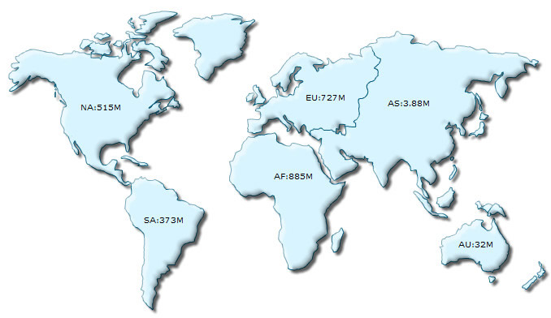
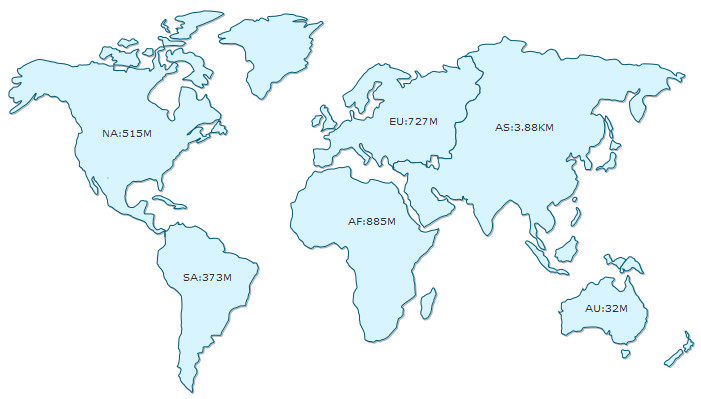

| Using FusionCharts jQuery plugin to render map | ||||||||||||||||||||||||||||||||||||||||||||||
|
FusionMaps XT comes with a new jQuery plugin that lets you use the jQuery framework and format to render FusionMaps XT anywhere within a Web page. FusionMaps XT uses FusionCharts jQuery plugin that takes care of all the products of FusionCharts Suite XT including FusionMaps XT. Using FusionCharts jQuery plugin, you can render maps anywhere within a Web page, change map type, update and retrieve map data, update functional and cosmetic settings and use all existing features of FusionMaps XT. To aid your understanding of this section, we will recommend you to go through the following sections of documentation (if you have not already read them):
In this page, we will see how to use the FusionCharts jQuery plugin. |
||||||||||||||||||||||||||||||||||||||||||||||
| Setting up FusionCharts jQuery plugin | ||||||||||||||||||||||||||||||||||||||||||||||
|
Setting up of FusionCharts jQuery plugin is as simple as putting an additional reference to the plugin file (FusionCharts.jqueryplugin.js) as shown below: <script type="text/javascript" src="Maps/FusionCharts.js"></script> <script type="text/javascript" src="Maps/jquery.min.js"></script> <script type="text/javascript" src="Maps/FusionCharts.jqueryplugin.js"></script> Note: The required JavaScript files are available in Download Package > Maps folder. This completes the setup. Please note that you will need to follow all the primary steps required for FusionMaps XT to perform, namely:
You do not need to include FusionCharts.HC.js, FusionCharts.HC.Maps.js and the map definition file (FusionCharts.HC.world.js) in your code. FusionCharts.js will automatically load these files based on requirement. Now, let's create our first map using FusionCharts jQuery plugin. We will start with the same Population data which we have created in Creating your first map page as shown below:
We had already saved this data as Data.xml. The code to use this data and generate a World Map using FusionCharts jQuery plugin is as follows: <html>
<head>
<title>My First map using FusionMaps XT</title>
<script type="text/javascript" src="Maps/FusionCharts.js"></script>
<script type="text/javascript" src="Maps/jquery.min.js"></script>
<script type="text/javascript" src="Maps/FusionCharts.jqueryplugin.js"></script>
</head>
<body>
<div id="mapContainer">FusionMaps XT will load here!</div>
<script type="text/javascript"><!--
$(document).ready(function(){
$("#mapContainer").insertFusionCharts({
swfUrl: "Maps/FCMap_World.swf",
dataSource: "Data.xml",
dataFormat: "xmlurl",
width: "750",
height: "400",
id: "myMapId"
});
});
// -->
</script>
</body>
</html>
The resultant map will be rendered as shown in the image below:  How it works? We save the above code as FirstMap.html. In the above code we have:
The insertFusionCharts method renders a map in the selected element. It takes a set of key/value pairs representing map configurations as parameter. The set is passed as an Object. The properties of the parameter-object are as follows:
What happens if Flash player is not available? Rendering the map as JavaScript You can also render the JavaScript map using the same method. All you will need to do is to explicitly set the renderer property to javascript. In case you are running the sample from local file system, you will also need to set the map data as string. The code snippet below contains the modified sample: $("#mapContainer").insertFusionCharts({
swfUrl: "Maps/FCMap_World.swf",
renderer : "javascript",
width: "750",
height: "400",
id: "myMapId",
dataFormat: "xml",
dataSource: "<map borderColor='005879' fillColor='D7F4FF' numberSuffix='M' includeValueInLabels='1' labelSepChar=':' baseFontSize='9'> "+
" <data> "+
" <entity id='NA' value='515' /> "+
" <entity id='SA' value='373'/> "+
" <entity id='AS' value='3875' /> "+
" <entity id='EU' value='727' /> "+
" <entity id='AF' value='885' /> "+
" <entity id='AU' value='32' /> "+
" </data> "+
" </map>"
});
The resultant map will look like the image shown below:  Starting FusionMaps XT, you can specify the map alias through type property instead of swfUrl. You can get the list of map alias names from the List of Maps page. A code snippet using type attribute is as follows:
$("#mapContainer").insertFusionCharts({
type: "World",
width: "750",
height: "400",
id: "myMapId",
dataFormat: "xml",
dataSource: "<map borderColor='005879' fillColor='D7F4FF' numberSuffix='M' includeValueInLabels='1' labelSepChar=':' baseFontSize='9'> "+
" <data> "+
" <entity id='NA' value='515' /> "+
" <entity id='SA' value='373'/> "+
" <entity id='AS' value='3875' /> "+
" <entity id='EU' value='727' /> "+
" <entity id='AF' value='885' /> "+
" <entity id='AU' value='32' /> "+
" </data> "+
" </map>"
});
|
||||||||||||||||||||||||||||||||||||||||||||||
| Using JSON as data source | ||||||||||||||||||||||||||||||||||||||||||||||
|
Apart from XML, you can also provide data in JSON format. You can provide JSON as JavaScript Object, as JSON string or as a URL. To provide data as JSON you will need to pass the JSON data source to dataSource property and set json or jsonurl to dataFormat property. The code snippet below shows how you can pass JSON Object as data source: $("#mapContainer").insertFusionCharts({
swfUrl: "Maps/FCMap_World.swf",
width: "750",
height: "400",
id: "myMapId",
dataFormat: "json",
dataSource: {
"map": {
"bordercolor": "005879",
"fillcolor": "D7F4FF",
"numbersuffix": "M",
"includevalueinlabels": "1",
"labelsepchar": ":",
"basefontsize": "9"
},
"data": [
{"id": "NA", "value": "515"},
{"id": "SA", "value": "373"},
{"id": "AS", "value": "3875"},
{"id": "EU", "value": "727"},
{"id": "AF", "value": "885"},
{"id": "AU", "value": "32"}
]
}
});
The code snippet below shows how you can pass JSON string as data source: $("#mapContainer").insertFusionCharts({
swfUrl: "Maps/FCMap_World.swf",
width: "750",
height: "400",
id: "myMapId",
dataFormat: "json",
dataSource: '{ '+
The code snippet below shows how you can pass a URL containing JSON as data source: $("#mapContainer").insertFusionCharts({
swfUrl: "FCMap_World.swf",
width: "400",
height: "300",
id: "myMapId",
dataFormat: "jsonurl",
dataSource: "Data.json"
});
|
||||||||||||||||||||||||||||||||||||||||||||||
| Appending and Pre-pending a map in an element | ||||||||||||||||||||||||||||||||||||||||||||||
The insertFusionCharts method renders a map inside a container element after removing any existing element present inside the container element. Using the appendFusionCharts method, you can also insert maps to the end the container element, thus preserving all existing element. An example is shown below: $("#mapContainer").appendFusionCharts({
swfUrl: "Maps/FCMap_World.swf",
dataSource: "March.xml",
dataFormat: "xmlurl",
width: "400",
height: "300",
id: "myMapMarID"
});
You can also insert maps to the beginning of the container element using the prependFusionCharts method as shown below: $("#mapContainer").prependFusionCharts({
swfUrl: "Maps/FCMap_World.swf",
dataSource: "January.xml",
dataFormat: "xmlurl",
width: "400",
height: "300",
id: "myMapJanID"
});
The parameter of appendFusionCharts and prependFusionCharts methods is same as the parameter of insertFusionCharts method |
||||||||||||||||||||||||||||||||||||||||||||||
| Changing type of an existing map | ||||||||||||||||||||||||||||||||||||||||||||||
|
You can also change map type of an existing map. The updateFusionCharts methods helps you to achieve this by modifying the swfUrl or type property as shown below: Using swfUrl:
$("#mapContainer").updateFusionCharts({"swfUrl": "Maps/FCMap_World.swf"});
Using type:
$("#mapContainer").updateFusionCharts({"type": "World"});
|
||||||||||||||||||||||||||||||||||||||||||||||
| Changing data of an existing map | ||||||||||||||||||||||||||||||||||||||||||||||
The updateFusionCharts methods helps you change data of an existing map as shown in the code below: $("#mapContainer").updateFusionCharts({"dataSource": XMLAsString, "dataFormat": "xml"}); |
||||||||||||||||||||||||||||||||||||||||||||||
| Changing width and height of an existing map | ||||||||||||||||||||||||||||||||||||||||||||||
The updateFusionCharts methods also helps in changing the dimension of an existing map. The code snippet below show how this can be achieved: $("#mapContainer").updateFusionCharts({ width : 280, height : 200 }); |
||||||||||||||||||||||||||||||||||||||||||||||
| Other features and options | ||||||||||||||||||||||||||||||||||||||||||||||
|
In this section we have showcased some of the basic methods of FusionCharts jQuery plugin and their uses. FusionCharts jQuery plugin additionally provides methods to:
We will discuss the complete API and the features of FusionCharts jQuery plugin in FusionMaps XT and jQuery section. |
||||||||||||||||||||||||||||||||||||||||||||||